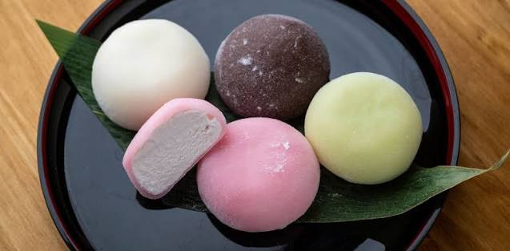

Una receta japonesa

Los mochis son un postre japonés preparado con arroz glutinoso y diferentes rellenos.
• Harina de arroz glutinoso
• Azúcar
• Agua
• Fécula de maíz
• Helado o fruta
40 minutos
8 porciones
Fresa
Chocolate
Matcha
Vainilla
Mezcla la harina de arroz, azúcar y agua.
Calienta la mezcla hasta que quede espesa.
Divide la masa en pequeñas porciones.
Agrega helado o fruta en el centro.